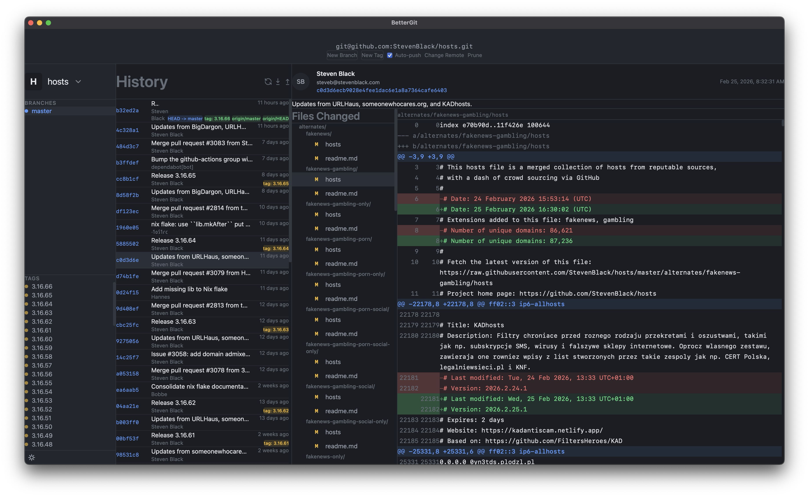

A simple Git UI. No accounts, no sign ups, no notifications. What you see is all there is.
Free & Open Platform
No features hidden in menus or settings panels. What you see on screen is all there is.
No sign ups, no logins, no telemetry. Download it, open it, use it.
No badges, no pop-ups, no update nags. It stays out of your way.
No confusing features or settings to get lost in. Just the Git workflow you need.
Runs on macOS, Windows, and Linux. Same simple experience everywhere.
No trials, no tiers, no paywalls. Download it and it's yours.